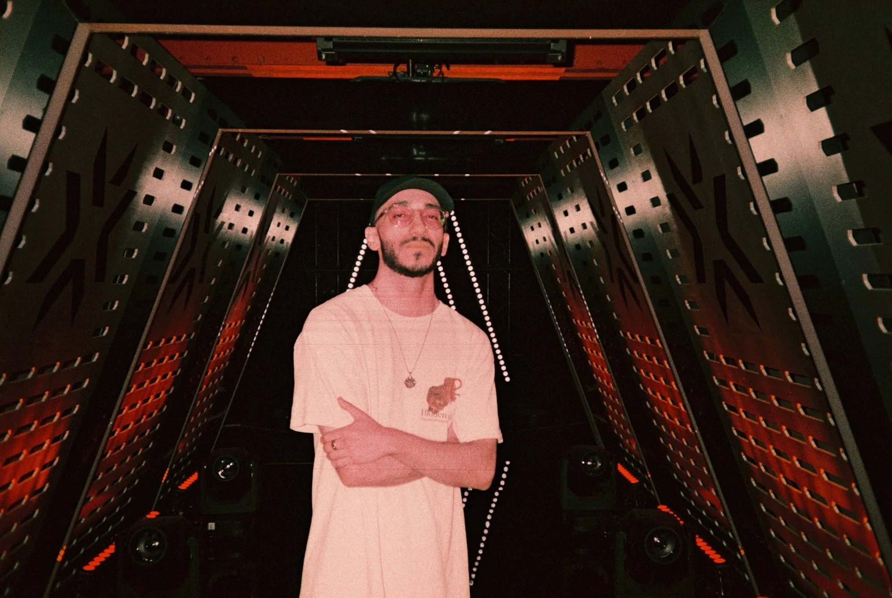

About Ramtin Totonchi

About
I lead social-first creative work: the strategy behind it, the idea at the centre of it, the content that carries it, and the numbers that show whether it worked.
I spent twelve years building my own audience as a creator before owning social for anyone else. Since then, I’ve run social at G2 Esports, shaped EMEA social and creative strategy for VALORANT Esports at Riot Games, and continued that work at Edelman across nine markets.
Today, I lead social content for Google Cloud at Jellyfish: turning complex technology into work that executives, engineers and wider audiences actually stop for. I also own the Luminary Programme, keeping Google Cloud leaders visible and credible on LinkedIn.
The through-line is the same in B2B and B2C: find the cultural moment a brand has a right to own, build one idea strong enough to travel across platforms and markets, make every version feel native to where it lands, then measure honestly and make the next one better.
How I work
Start with the audience, not the asset.
Find the cultural tension worth exploring. Build one big idea that travels across markets and platforms, then make it feel native to each. Measure what matters, learn what resonates, and make the next idea even stronger.
In numbers
15+
Years in social, content and community
1,000+
Videos delivered between 2020 and 2026
100K
Scaled a newly launched YouTube channel to 100K subscribers in year one, earning the Silver Creator Award.
2021
Esports Creative Piece of the Year, G2 Esports × adidas
Google Cloud social, at Jellyfish
Account-level results across Google Cloud’s global LinkedIn and Instagram, plus its UK X channel.
5.1M
Impressions
+12.6% year on year
601.7K
Engagements
+28.8% year on year
265.6K
Weighted engagements
+54.1% year on year
11.8%
Engagement rate
up from 10.4%
Followers across the three accounts grew by 106,534 to 777,064.
Experience
- JellyfishSocial Content Manager, on the Google Cloud account2025–now
- EdelmanSocial & Content Lead, on the Riot Games account2024–25
- Riot GamesSocial Media Strategist, EMEA · VALORANT Esports2022–24
- G2 EsportsSocial Media Manager2020–22
- IndependentContent Creator & Consultant2008–20
Brands I've worked with
- Google Cloud
- The FA
- Riot Games
- VALORANT Esports
- adidas
- Ralph Lauren
- Logitech G
- Red Bull
- Aim Lab
- Cougar
- Paysafecard
- Unilumin
- OMEN by HP
- Intel
- Snickers